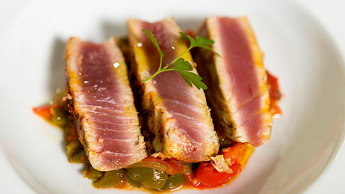

Vitamin B6-Pyridoxine
Health Benefits:
- Production of Red Blood Cells
- Metabolism of Carbohydrates
- Brain and Nervous System Health
- Liver Detoxification
Food Source:
- Tuna, Turkey, Beef, Chicken, Salmon, Shrimp, Cod
- Garlic, Leeks, Chili Peppers, Onions, Tumeric,
- Spinach, Cabbage, Bok Choy, Bell Pepper, Turnip Greens,
Cauliflower, Sweet Potato, Potatoes, Winter Squash, Broccoli, Collard Greens,,
Beet Greens, Kale, Carrot, Swiss Chard, Asparagus, Mustard Greens, Summer Squash,
Green Peas, Shiitake Mushrooms, Corn, Beets, Eggplant, Crimini Mushrooms, Green Beans,
Celery, Romaine Lettuce, Sea Vegetables
- Banana, Tomatoes, Avocado, Pineapple, Cantaloupe, Strawberries, Watermelon, Figs
- SUnflower Seeds, Pinto Beans, Lentils, Lima Beans
